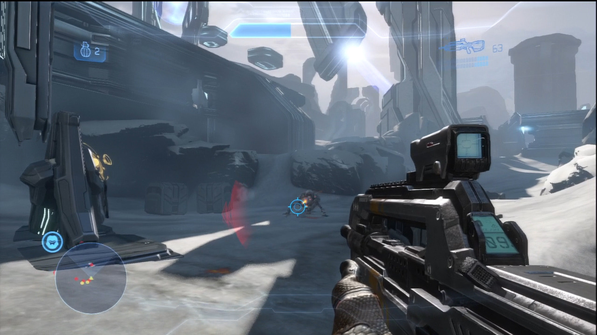

Shooter games or shoot'em ups, are games where typically the player controls a character or unit and shoots enemies(source).
First Person:
A first person shooter game(FPS) is similar to a third person shooter game in that they are both primaraly about shooting the enimies, but in first person shooter games the camera is positioned where the player characters head would be.
Example: Halo Series
Third Person
A third person shooter game(TPS) is similar to a first peron shooter game in that they are both primaraly about shooting eniemies, but in third person shooter games the camera is behind and above the player character giving the play a larger view of the game world.